PHARMRX · LOCAL DATABASE VERIFICATION · 20 OCTOBER 2026Changes that reach the database.
20 prescriptions2 dispensed4 real medicines8 SQL blocking scenarios passed
Fictional adult patient records with sourced medicine examples. Backend requests were followed by independent SQL reads. Rejected direct SQL attempts were rolled back. No real patient treatment was performed.
What the screenshots prove
The numbered feature screenshots show recorded before, after and restored SQL observations from rx_demo_evidence, displayed in MySQL Workbench. They are historical test evidence. The separate live-stock-before / after / rolled-back screenshots query the actual rx_batches table during a committed API update and its Undo.
Live stock: 191 → 196 → 191. Final inventory was restored. Dispensing reduced stock and created two real linked demo invoices; the database now holds 18 pending prescriptions and 2 dispensed.
Feature results
| Feature | Observed phases | Result |
|---|
| Patient contact edit | BEFORE · AFTER · ROLLED BACK | Passed |
| Inventory stock adjustment | BEFORE · AFTER · ROLLED BACK | Passed |
| Review prescription | BEFORE · AFTER · ROLLED BACK | Passed |
| Create prescription | BEFORE · AFTER · ROLLED BACK | Passed |
| Allergy warning | BEFORE · AFTER · ROLLED BACK | Passed |
| Patient flag rule from website API | BEFORE · AFTER · ROLLED BACK | Passed |
| Rolling quantity rule | BEFORE · AFTER · ROLLED BACK | Passed |
| Prescription upload and reservation | BEFORE · AFTER · ROLLED BACK | Passed |
| Purchase order receipt | BEFORE · AFTER · ROLLED BACK | Passed |
| Refill reminder | BEFORE · AFTER · ROLLED BACK | Passed |
| High dosage preview | BLOCKED | Passed |
| Real medicine combination | BLOCKED | Passed |
| SQL trigger: allergy | BLOCKED | Passed |
| SQL trigger: avoid | BLOCKED | Passed |
| SQL trigger: dose | BLOCKED | Passed |
| SQL trigger: flag | BLOCKED | Passed |
| SQL trigger: quantity | BLOCKED | Passed |
| SQL trigger: interaction | BLOCKED | Passed |
| SQL trigger: sports | BLOCKED | Passed |
| SQL trigger: warning | BLOCKED | Passed |
| SQL SAVEPOINT | BEFORE / AFTER / ROLLBACK | Passed |
| Dispense RX-619 | BEFORE · AFTER | Passed |
| Dispense RX-620 | BEFORE · AFTER | Passed |
Checkpoint behaviour
Persistent database checkpoints survive committed requests and backend restarts. They capture tracked application records before the first mutation, after five prescription creations, and after 30 minutes. The running backend checks the clock every minute, so the timed checkpoint is created on the first timer tick after 30 minutes. A restore saves a recovery checkpoint first, then restores records in one database transaction.
The five-prescription test created five additional records, confirmed the automatic checkpoint contained 25 prescriptions, then restored the original 20. The 30-minute test advanced a checkpoint timestamp by 31 minutes and called the same routine used by the timer; it did not wait 30 real minutes.
{
"passed": true,
"five_prescriptions": {
"id": 93,
"reason": "5 prescriptions",
"saved_prescriptions": 25
},
"thirty_minutes": {
"id": 94,
"reason": "30 minutes",
"method": "Advanced checkpoint timestamp by 31 minutes; invoked the same automatic routine as the server timer."
},
"restore": {
"ok": true,
"restored": 92,
"recovery_checkpoint": 95,
"records": 12
},
"final_prescriptions": 20
}A native MySQL SAVEPOINT was also tested inside one transaction: stock changed by 10 and ROLLBACK TO SAVEPOINT restored it. Native savepoints end at COMMIT or connection close. Website rollback therefore uses persistent checkpoints. Checkpoints do not back up SQL trigger definitions or password hashes. Removed account passwords require the existing database/account backup rather than checkpoint restoration.
Medicine data and limits
Three adult oral-tablet profiles use sourced examples: paracetamol 500 mg, ibuprofen 200 mg and cetirizine 10 mg. Warfarin 1 mg is included for its real interaction with ibuprofen; it has no general dose ceiling in this demo and remains blocked for individual dosing review. Side effects and precautions appear in Patient safety and checkout.
Checks cover configured records, not an exhaustive clinical interaction database. Patient allergies and sports restrictions use explicit medicine links. The three care-plan flag rules are fictional workflow examples, not universal contraindications or WADA determinations. The dataset is for a college demonstration, not prescribing guidance.
Workbench screenshots
Open an image to inspect it at full resolution. Matching SQL files are in the queries folder.
01 patient contact edit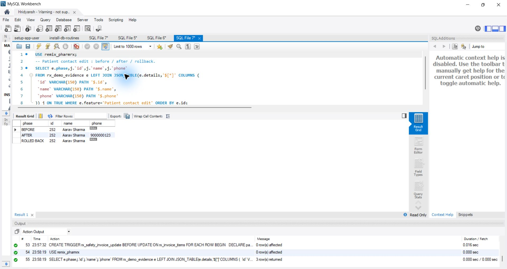
02 inventory stock adjustment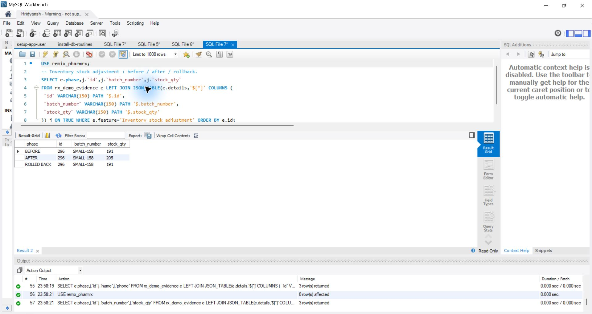
03 review prescription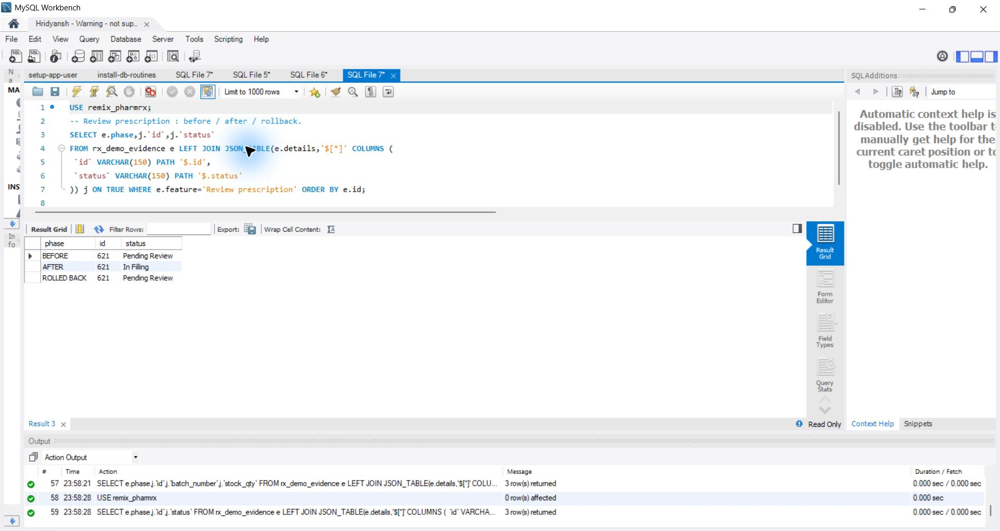
04 create prescription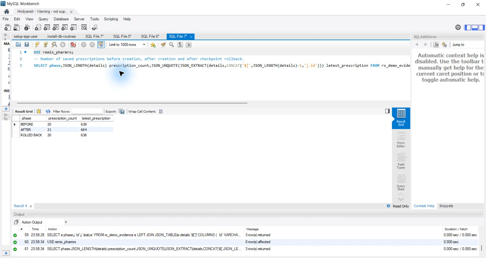
05 allergy warning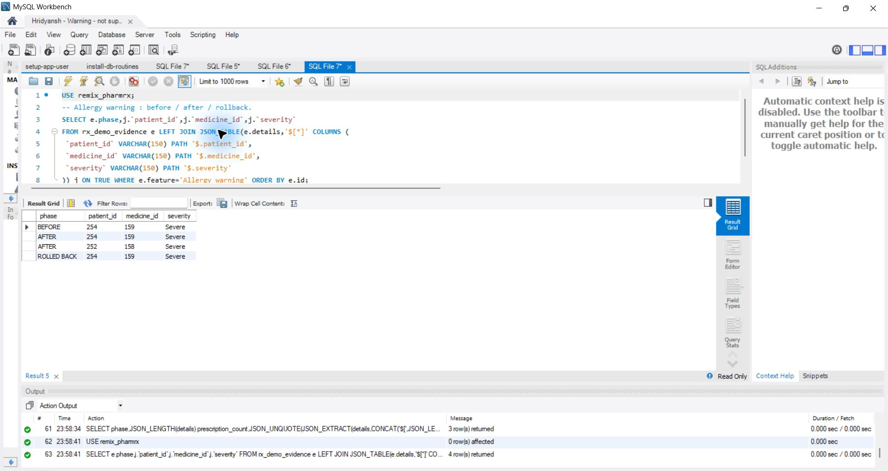
06 patient flag rule from website api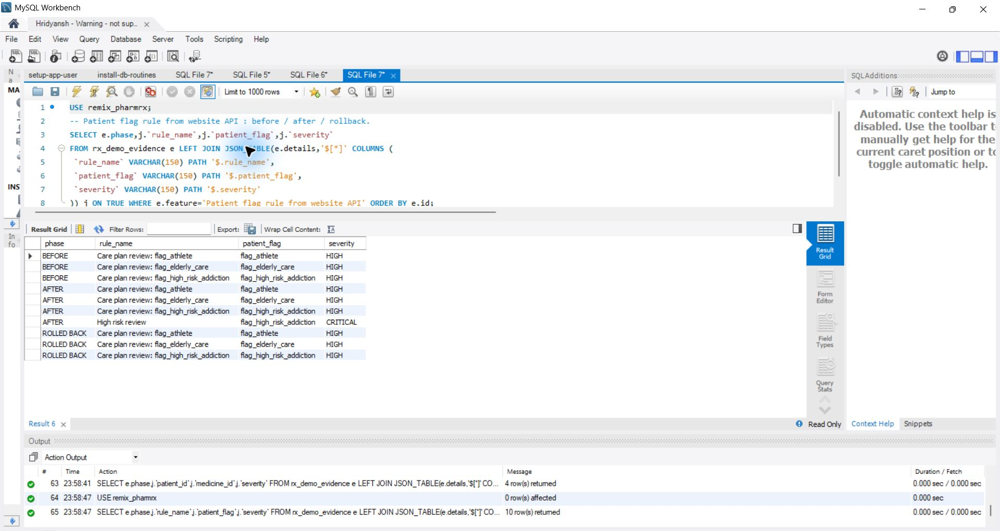
07 rolling quantity rule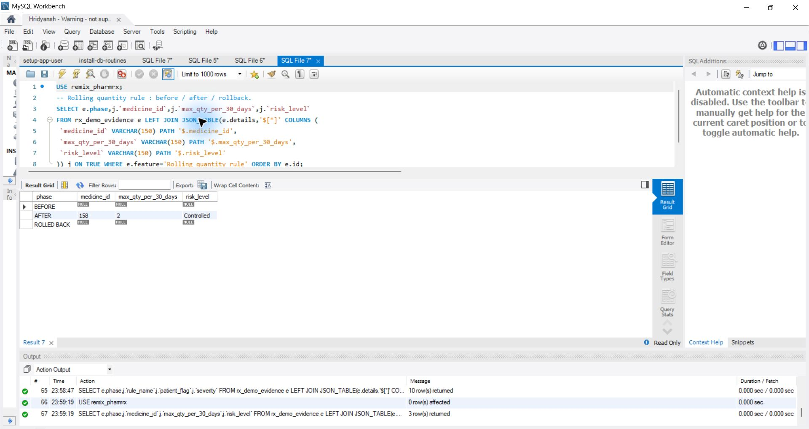
08 prescription upload and reservation09 purchase order receipt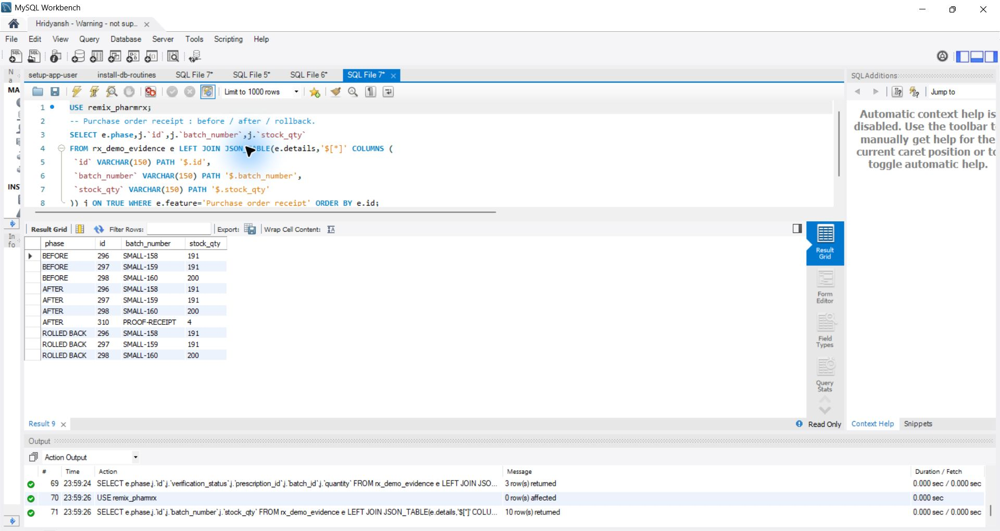
10 refill reminder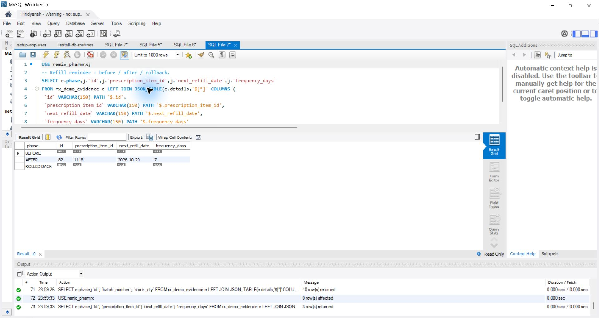
11 dispense rx 61912 dispense rx 620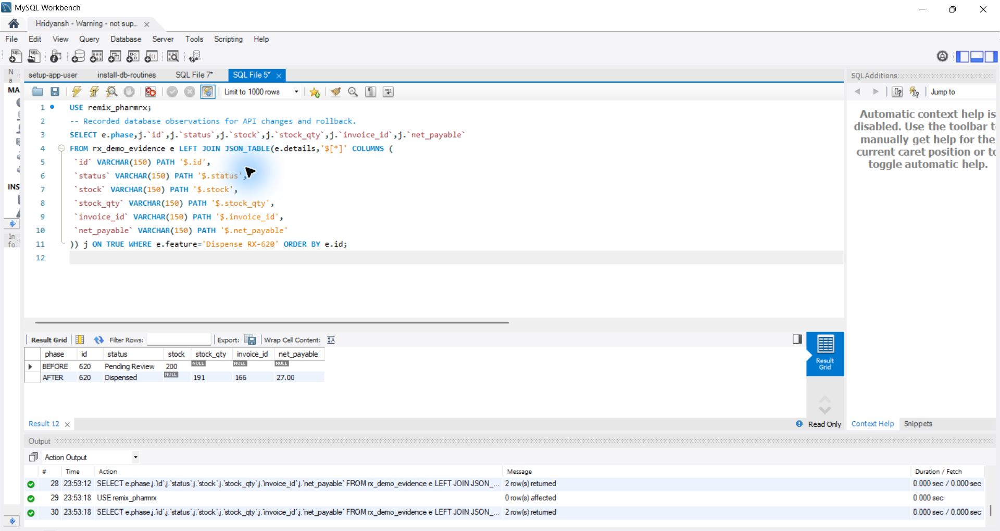
12 sql trigger blocks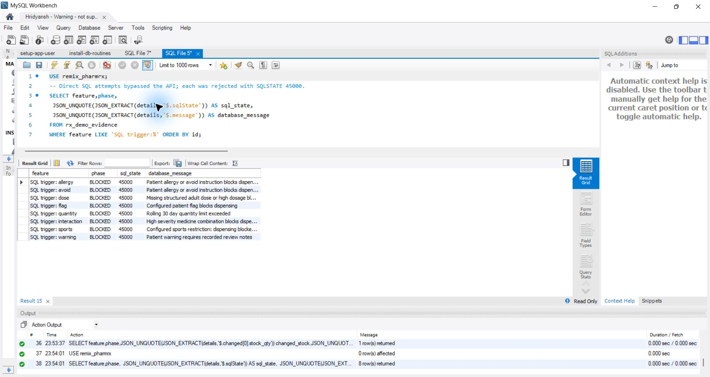
13 final database state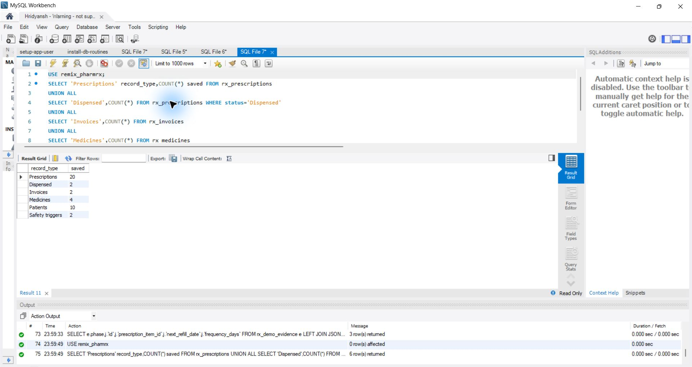
14 savepoint rollback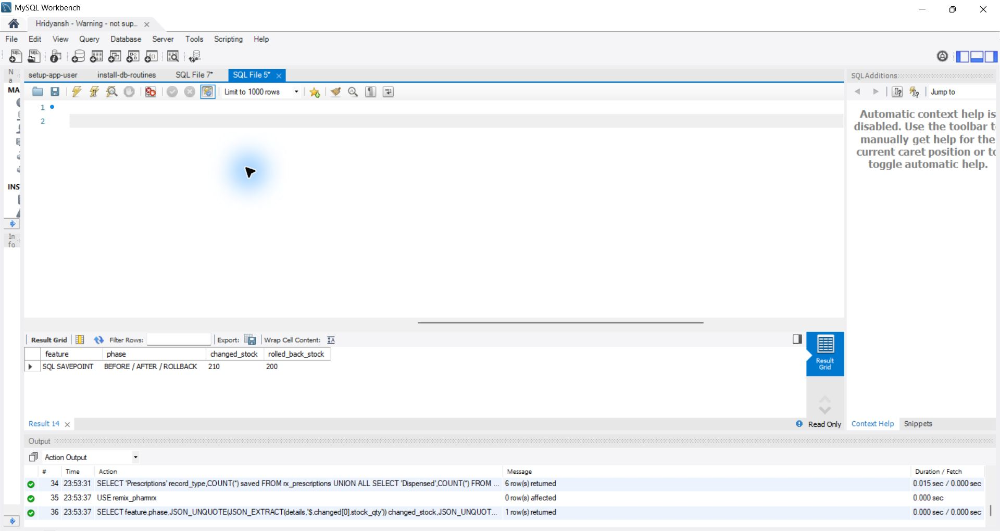
15 live stock before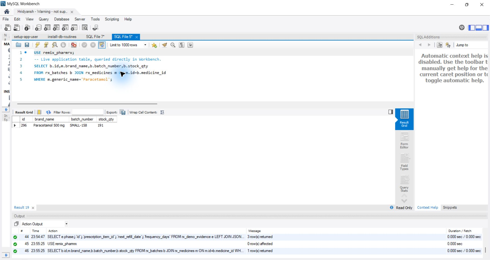
16 live stock after17 live stock rolled back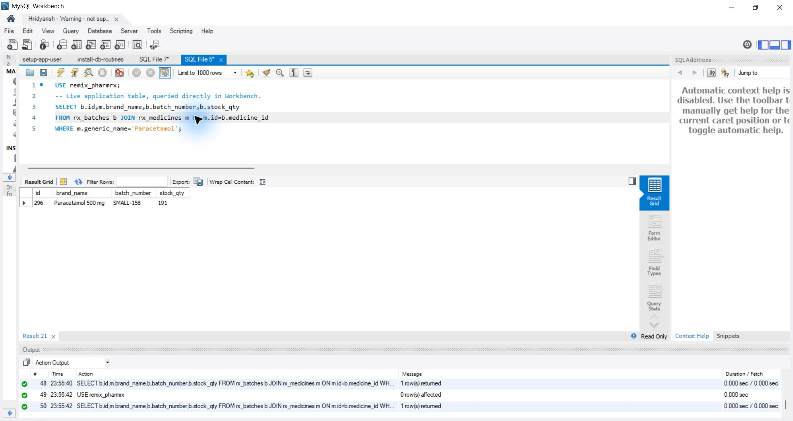
Reproduce
cd backend
node install-safety.js
# If the application account cannot create triggers, run
# install-safety-triggers.sql in an administrator Workbench session.
node --test --test-concurrency=1 tests/*.test.js
node verify-small.js
# Explicit replacement of the demo dataset (backs up app data first):
node seed-small.js
node verify-small.js
Open the app at localhost:5000. As administrator, use More → Patient safety for flag rules, interactions, dose profiles and trigger status; use More → Checkpoints to save or restore. Trigger installation uses fixed server SQL; the website never accepts arbitrary SQL.
Raw before/after evidence · Checkpoint test evidence · Live stock evidence